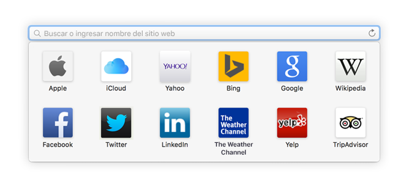
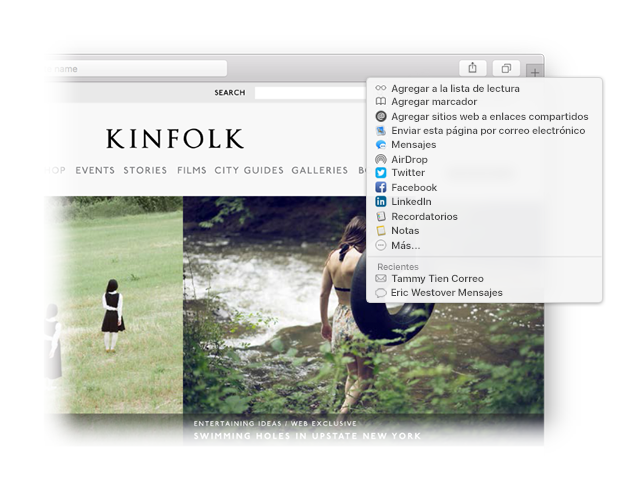

Encuentre un favorito.
Haga clic en el campo de búsqueda inteligente para acceder a sus sitios web favoritos, y luego haga clic en uno para ir a él.

Marque un sitio.
Arrastre una pestaña a la izquierda para marcar un sitio, y esta se quedará colocada en la barra de pestañas.

Comparta un enlace
Haga clic en  para enviar un enlace en un correo o texto, compartirlo en Facebook o Twitter, o agregarlo a Notas.
para enviar un enlace en un correo o texto, compartirlo en Facebook o Twitter, o agregarlo a Notas.